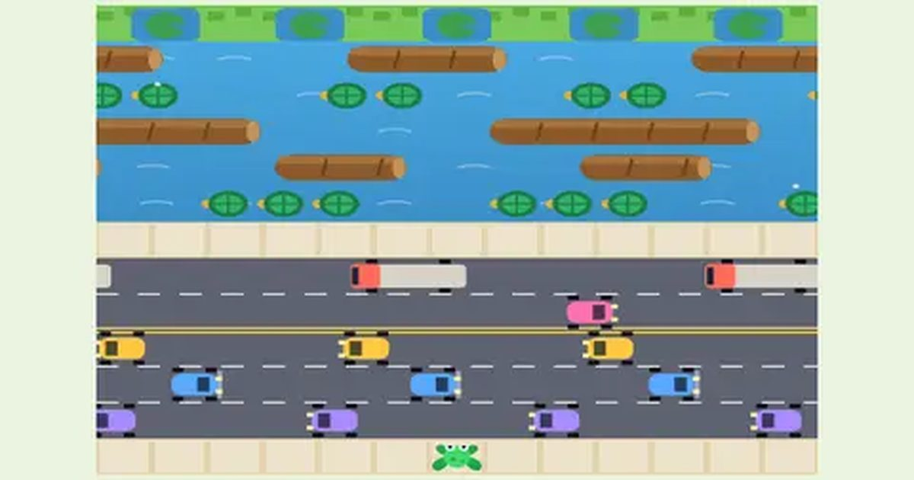

폴짝 개구리
Hop Frog
길 건너기 · 고전무료설치 없음폰 · PC
▶ 지금 바로 하기로그인 없이 브라우저에서 바로 시작돼요
어떤 게임인가요?
차를 피해 도로를 건너고, 통나무와 거북 등을 밟아 강을 건너 연못 다섯 곳을 모두 채우세요.
목표 · 개구리 다섯 마리를 강 건너 연못 다섯 칸에 모두 들여보내면 다음 판.
이렇게도 찾아요
개구리 길건너기길 건너기 게임개구리 게임차 피하기frog crossingroad crossing gameroad cross game
#길건너기 #개구리게임 #고전게임
게임 방법
- 한 번에 한 칸씩 뜁니다. 앞으로 새 칸에 갈 때마다 10점.
- 아래쪽 도로(5줄)에서는 차에 닿으면 끝. 트럭 · 경주차 · 불도저 등 줄마다 속도와 방향이 달라요.
- 위쪽 강(5줄)에서는 통나무나 거북 등 위에만 설 수 있고, 올라타면 함께 떠내려가요. 물에 빠지거나 화면 밖으로 밀려나면 끝.
- 일부 거북은 물속으로 잠수합니다. 깜빡이면 곧 들어가요.
- 맨 위 연못 칸에 정확히 들어가면 50점 + 남은 시간 0.5초마다 10점. 이미 찬 칸이나 칸 사이 풀숲에 뛰면 끝.
- 연못에 파리가 보일 때 들어가면 +200. 3판부터는 악어가 입을 벌린 칸이 생겨요.
- 다섯 칸을 모두 채우면 +1,000점, 다음 판은 더 빠르고 붐벼요. 한 마리당 30초, 20,000점에 개구리 +1.
등장하는 것들
- 한 칸 전진 · 10점
- 연못 도착 · 50 + 남은 반초당 10
- 파리 · +200
- 다섯 칸 완성 · +1,000 · 다음 판
- 통나무 · 올라타면 함께 이동
- 거북 · 깜빡이면 곧 잠수
- 악어 (3판~) · 그 칸에 들어가면 끝
- 시간 · 한 마리당 30초
공략 팁
- 강에서는 통나무가 오기를 기다렸다가 타세요. 급하게 뛰면 물에 빠져요.
- 떠내려가는 동안 연못 칸과 줄이 맞을 때 위로 뛰세요.
- 빠른 경주차 줄은 차가 막 지나간 직후가 안전해요.
- 남은 시간이 점수이니 망설이지 말고 리듬 있게.
 링 파이터
링 파이터 승부차기
승부차기 구름 점프
구름 점프 솔리테어
솔리테어 추억의 핀볼
추억의 핀볼 막대 파이터
막대 파이터